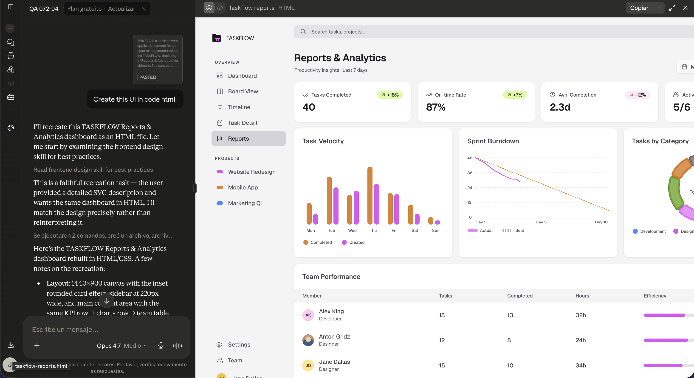
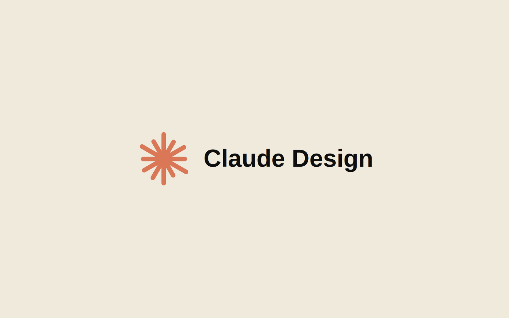

Prompt Designer — TasteMakers/Anthropic
Design prompt engineering for Anthropic’s TasteMakers — translating UI structures into structured prompts so AI models can reconstruct layouts accurately. An ongoing R&D engagement on the boundary between visual design and prompt engineering.
The project
TasteMakers is exploring how AI models can reconstruct UI layouts from structured visual specifications. Working with Anthropic’s Claude, the brief is to turn arbitrary user interfaces into prompts so machines can rebuild them accurately — preserving spatial intent, hierarchy, and motion semantics.
The challenge sits at an unusual intersection. Designers think visually; AI models receive text. Bridging that gap requires not just describing what something looks like, but encoding the rules that make a layout coherent — proportions, alignment systems, motion timing, accessibility constraints.
What I do
The work splits between three concerns: analyzing existing UIs for structural patterns, defining a vocabulary that maps visual decisions to prompt fragments, and testing reconstruction fidelity with various models.
Day-to-day this means writing structured prompts that capture layout semantics — grid relationships, motion specs, interaction states — then iterating on the gap between intent and output. Motion specifications get particular attention because they are the hardest to compress into language without losing nuance.

Structured spec — the prompt input
Reconstructed UI — the model outputStatus
The engagement is active. Early findings: pure visual descriptions ("a card with rounded corners and a subtle shadow") produce inconsistent results; structural prompts that encode rules and tokens produce far more reliable reconstructions. The work is contributing to a body of practice around AI-design collaboration.